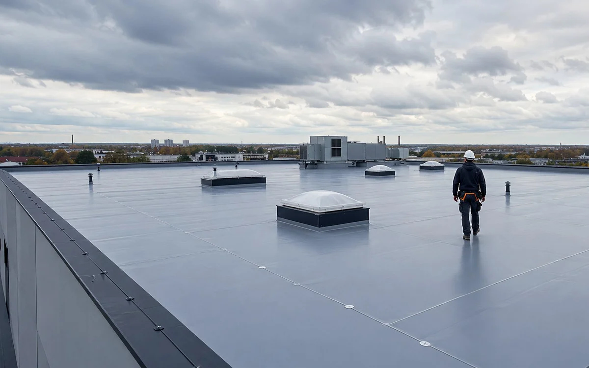

В случае «как работает кровля из пвх-мембраны» внешний симптом не всегда показывает настоящее зону повреждения. Проверка идёт от видимого признака к связанной конструкции.
ПВХ-мембрана
Начинать стоит с безопасного осмотра и фиксации признаков. Важно понять, когда проявляется проблема, меняется ли она после дождя, ветра или перепада температуры.
Что проверяют
На объекте обращают внимание на следующие элементы:
- основание
- разделительный слой
- крепление
- сварка швов
- узлы
Как оценивают ситуацию
Решение зависит от состояния основания, доступа к скрытым слоям и того, является ли дефект локальным. Поверхностное исправление имеет смысл только тогда, когда причина находится в доступном узле, а соседние элементы остаются исправными.
Ошибки, которых стоит избегать
- слабый шов
- несовместимое основание
- мало креплений
- непроверенные углы
Перед вмешательством стоит проверить, остаются ли сухими основание, утепление и элементы рядом с повреждением.
Когда нужен осмотр
Если дефект повторяется или распространяется, нужен осмотр. Фотографии полезны для предварительного понимания, но они не показывают влагу внутри утеплителя, состояние древесины и скрытые стыки.
Частые вопросы
Можно ли проверить проблему без разборки?
Часть признаков видна без демонтажа. Открывать конструкцию нужно только там, где иначе невозможно установить причину.
Что подготовить перед консультацией?
Общие фотографии крыши, крупные планы проблемного участка, снимки с чердака и короткое описание условий, при которых появляется дефект.
Материал проверен на основе практики с 2017 года
METROPLEX работает в сфере малоэтажного строительства, проектирования и кровельных решений. В материале описаны общие принципы. Окончательное решение принимается после анализа конструкции конкретного объекта.